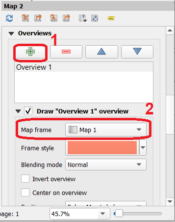
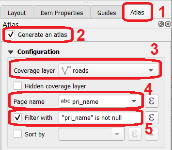

Cartographic outputs¶
At some point in a GIS workflow, you will want to produce maps for printing.
This exercise will introduce you to the basic concepts of behind the Print layout the tool used in QGIS to produce printing layouts for maps.
Resources
This exercise uses the same dataset used for the *Spatial relationships. If you need to download the data again just clik on this link. The dataset contains the following layers:
dorset_cadaster.qgz a QGIS project preloading a geopackage containing the following layers:
roads (road network)
water_plan (area a water management plan where special provisions may apply)
power_line_project (proposed route for a high voltage aereal cable)
parcels (the cadaster)
land_use (land uses as of 2015)
parish (admninistrative boundary of the parishes within the Dorset municipality - Tasmania)
party (fictional list of parties)
building (empty layer of type polygon)
topographic_map (a sample topographic map generated from Open Street Map)
building_type (fictional list of types of buildings)
In additon to the project and respective datasets, there are also folders with auxiliary files the exercise may refer to.
Preparing a map¶
The first thing you need is to actually have a cartographic visualization you want to share. To keep things simple, we will be using just two layers: land_use and roads.
Task style the layers in any manner you wish. In this example we are using a
Cagegorizedstyle for both layers. In the case ofland_use, fieldLU_DESCRIPis used to generate the categories, in the case ofroadsthe attribute being used issurface_ti. In addition, theroadslayer is being labeled using the attributepri_name.
Attention
If you don't want to spend time styling the roads layer, you also import the style file roads.qml. You will find it under the folder `styles. You can do that from the bottom of the Layer properties dialog where you will see a button named Style
Configuring a print layout¶
Now that the layers you need for your map are according to what you want, we will start working on preparing a print layout.
Task Go to
Project>New print layoutand provide a name for the map layout you are about to create. We suggest you name itroads and land use.
Upon pressing he OK button, the Print layout window will open. Lets start by understanding the main elements of this tool Fig. 36.

Fig. 36 The Print layout¶
[1] Under
Layout, you will find options that apply to the layout, like for example page size, DPI,etc;[2] In contrast, under
Item propertiesyou will find options that affect only the currently selected object (see point 4);[3] Here you will find options to print and export your map once you are done with the layout;
[4] This is the
Select/Move item. Use it to select elements of your map, like scale bars, legends, etc;[5] The
Add maptool allows you to adjust the extend of the map (see next point);[6] With the
Add map, you draw a rectangle that will work as a container for your map. By default your map will be the result of comnining the currently visible layers in QGIS;[7] The
Add labeltool. With it you can place a text box anywhere in your layout;[8] The
Add legendwill automatically build a map legend from the set of visible layers. Most of the time you will want to tweak it further;[9] The
Scale baradds a legend to your map;[10] Finally, the
North arrowwill add a north arrow.
Attention
For a complete overview of the Print layout check the official documentation
Add a map to the layout¶
Task Start by usig the
Add maptool to add a map to your composition. Adjust if necessary with the``Select/Move itemtool Fig. 37.

Fig. 37 Adding a map to the layout¶
Add legend, scale bar and a north arrow¶
Task Add other basic elements of your map: a legend, a scale bar and a north arrow Fig. 38.
Fig. 38 Adding map elements¶
Task Try to add an overview map! Use the
Item propertiespanel of each of the elements you have in the map to do the adjustments you consider necessary. Take your time to explore the options each type of item offers.On the
Item propertiesof your first map, mark the optionsLock layersandLock styles;Go back to QGIS and turn all layers off EXCEPT
parish;Return to the
Print layoutwindow and add a second, smaller, map box. Adjust the scale so that the wholeparishlayer is visible and then check theLock layersandLock stylesoptions.Still while at the
Item propertiesof the second map (the overview map) go to theOverviewssection and set the map as an overview ofMap1Fig. 39.
Fig. 39 Defining an overview map¶
Depending on how you set your map and the options you choose under each of the objects Item properties, your map might be looking something like Fig. 40:
Fig. 40 Final map layout¶
Attention
This exercise is just and introduction to map layouting in QGIS - further details depend on how deep you are willing to explore. The example we are reproducing here should get you started with the basic mechanics of the Print layout.
The Atlas¶
The Atlas is an interesting feature of the Print layout of QGIS. It offers the possibility of automatizing the production of maps according to a coverage layer.
This coverage layer can be any feature, but the classic example is an administrative unit. Essentially, what the Atlas does is to apply the layout we have been
working on to X maps according to the number of features in the coverage layer. Once this is done we can print those X maps in one go.
For our example, the coverage layer will be the roads layer. This means evey road in that dataset will define the extents of one of the maps of the Atlas.
There are 580 roads in the dataset, therefore we can have to up 580 maps, or pages, in our Atlas.
Task From the
Print layoutwindow, click onAtlasan then onAtlas settings. An extra tab, namedAtlaswill be showing next to theLayout propertiesandItem properties.Task In the
Atlastab, enter the following options Fig. 41:Start by checking the option
Generate and Atlas;Set the
roadsas the coverage layer;Under
Page nameenter pri_name;Finally, under
Filterenter the expression "pri_name" is not null (this will make our Atlas a bit lighter by excluding the generation of a map for roads with no name)
Fig. 41 The Atlas settings¶
Task Now go to the
Item propertiesof the main map (Map 1) and check the optionControlled by AtlasTask Now click on the
Preview Atlasbutton and use the arrows to preview the maps that make up the atlas Fig. 42.

Fig. 42 Previewing the Atlas¶
Printing and exporting¶
You can print and/or export a single map or the full Atlas to one of these formats: PDF, Image (.png, .jpg, etc) or SVG. Just keep in mind that the export buttons are different depending on if you are exporting a single map or a full atlas Fig. 43
Fig. 43 Print and export options¶
From the Layout menu, you can also save your layout as template to be used in other projects.